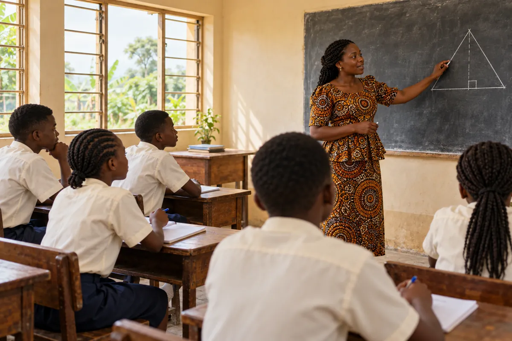
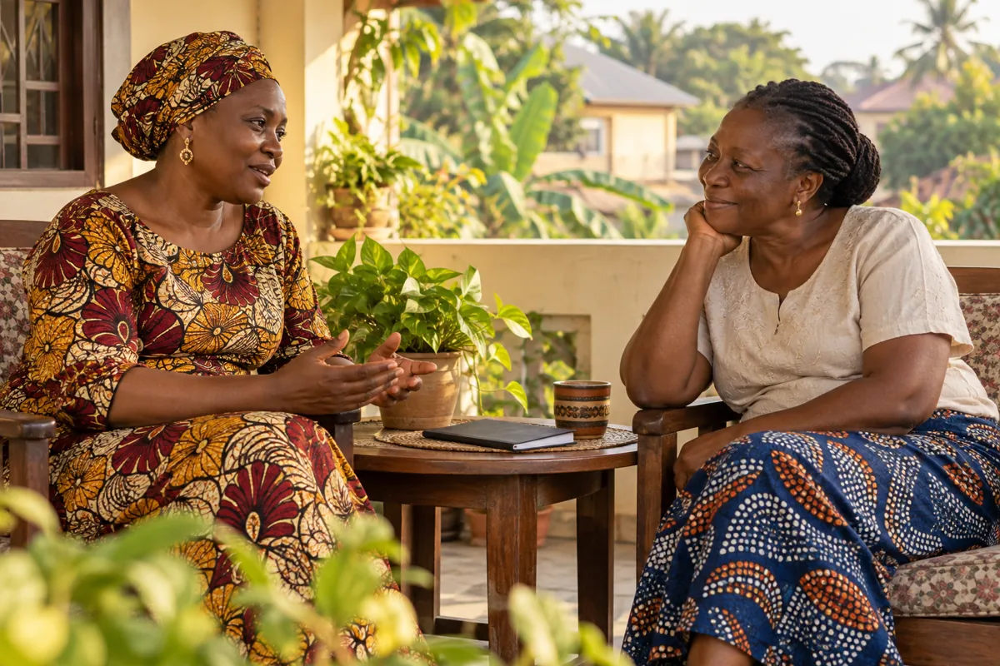

Finish what their parent started
Support school fees, uniforms and books for a child of a deceased teacher.
Sponsor a childSponsor & support
A teacher. A child. A widow. Someone who spent a lifetime teaching. Choose where you would like your support to make a difference.


Support school fees, uniforms and books for a child of a deceased teacher.
Sponsor a childPay a salary, top up meagre pay, give a 13th-month gift or support a retired teacher.
Support a teacherCommit to ongoing support for a widow of a late teacher, from wherever you are.
Adopt a widowFund teacher salaries, scholarships and running costs at COCEGN Academy.
Support the AcademyBring friendship and encouragement to an aged or isolated educator.
Ministry to the Aged
Talk to our team about a one-time gift, monthly support or a specific need.
Explore giving